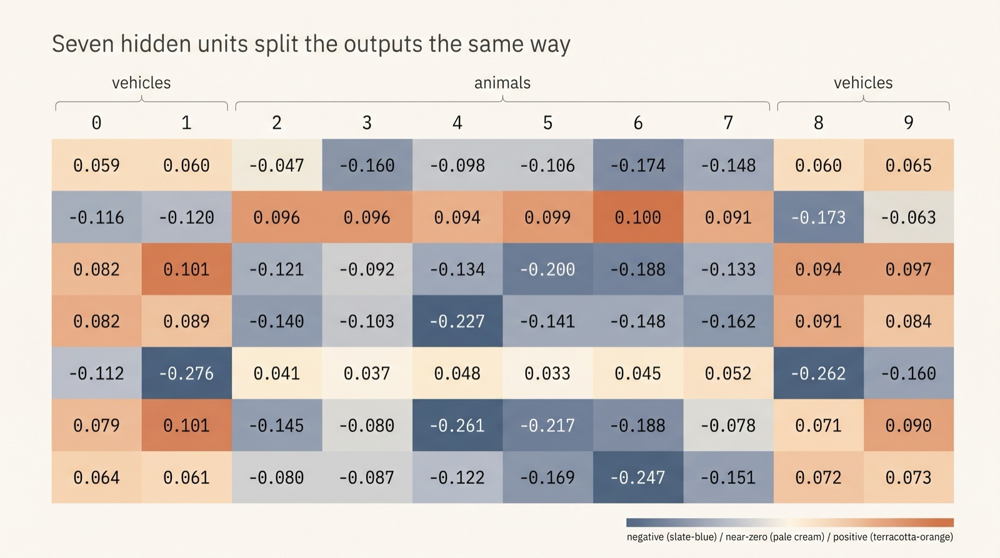
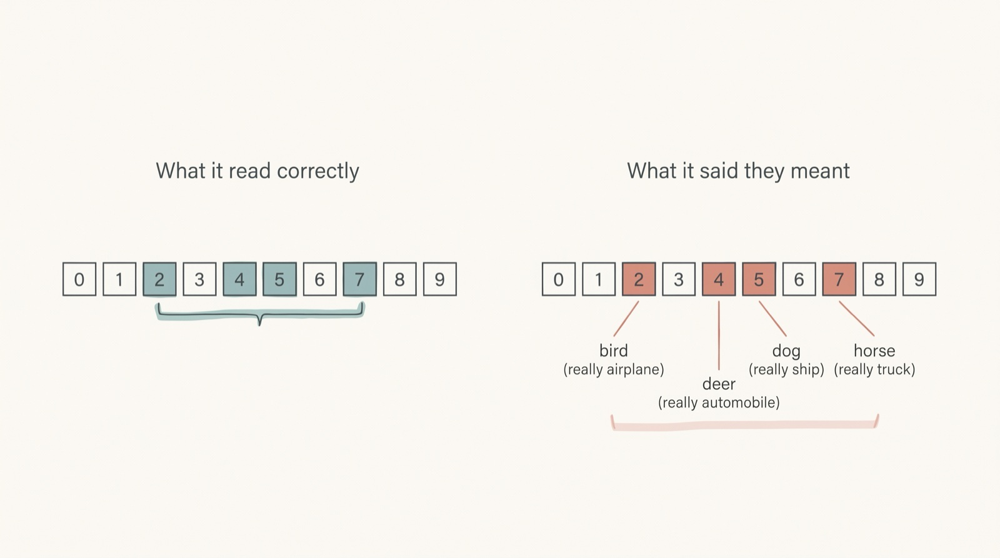
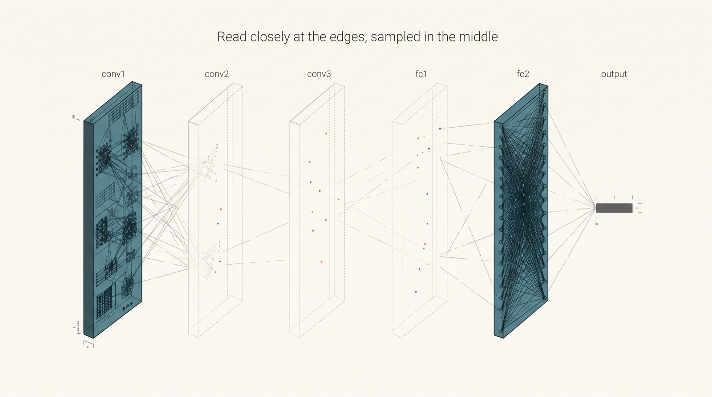
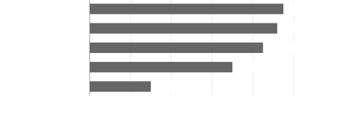

Can an LLM Actually Reason and Program about Neural Network's Weights or is it just memorization on steroids? Exploring "Weight-Space Programming"
Abstract摘要
Large language models (LLMs) have recently been reported to read and write the raw weights of neural networks directly, a capability termed weight-space programming. We ask whether the reading side of this capability reflects reasoning about weight flows or a combination of local arithmetic at the network’s edges and memorized priors over public datasets. We test Claude Opus 5.5 on small convolutional networks of about 125,000 parameters trained on five image datasets, providing every weight as plain text with no tools, no forward passes, and no dataset or class names. The model performs accurate local calculations: batch-normalization statistics lead it to infer about three optimizer steps on networks stopped after three updates, and output-layer sign patterns recover the vehicle/animal split of CIFAR-10. The sessions report reading the first and last layers closely and sampling the middle, and several claims built on partial tracing fail verification, although we did not run a direct forward-pass test. Semantic judgments lean on familiar datasets: the model names CIFAR-10 for CIFAR-10 networks but also for all three fast-food networks, relabels KMNIST as MNIST, reads a 99.57%-accurate SAT-6 network as CIFAR-10 animal photos, and calls “frog” the output favored by a feature that fires most on trees. Permuting CIFAR-10’s labels preserves the output split at the new indices, but every class pair the model interprets is then wrong, indicating reliance on remembered label order. These are exploratory results from mostly single runs. We conclude that zero-shot weight reading by this model is better described as local arithmetic plus dataset priors than as weight-flow tracing, and we provide a protocol for auditing future weight-space claims.
近期有报告称，大语言模型（LLM）能够直接读取和写入神经网络的原始权重，这种能力被称为权重空间编程。我们考察这种能力中的读取部分究竟体现了对权重流的推理，还是网络边缘处的局部算术运算与记忆中的公共数据集先验的结合。我们在五个图像数据集上训练了参数量约为 125,000 的小型卷积网络，并以纯文本形式提供全部权重，在不提供工具、不进行前向传播、也不提供数据集或类别名称的条件下测试 Claude Opus 5.5。该模型能够准确地进行局部计算：对于在三次更新后停止训练的网络，模型根据批归一化统计量推断出其经历了约三次优化器更新步骤；根据输出层的符号模式，模型还原了 CIFAR-10 中交通工具与动物的划分。会话记录显示，模型仔细读取了第一层和最后一层，并抽样查看了中间层；基于局部追踪提出的若干判断未能通过验证，不过我们并未开展直接的前向传播测试。语义判断依赖于熟悉的数据集：模型将 CIFAR-10 网络识别为 CIFAR-10，但也将全部三个快餐网络识别为 CIFAR-10；将 KMNIST 重新标记为 MNIST；将一个准确率为 99.57% 的 SAT-6 网络解读为处理 CIFAR-10 动物照片的网络；并将一个在树木图像上激活最强的特征所偏好的输出称为“青蛙”。对 CIFAR-10 的标签进行置换后，输出划分仍在新的索引位置上得到保留，但模型解读的每一组类别配对均出现错误，表明其依赖于记忆中的标签顺序。这些结果属于探索性发现，大多来自单次运行。我们得出的结论是，与权重流追踪相比，局部算术运算与数据集先验的结合更适合描述该模型的零样本权重读取能力；我们还提供了一套用于审查未来权重空间相关主张的规程。
Keywords: large language models; mechanistic interpretability; weight-space programming; dataset priors; model auditing
关键词：大语言模型；机制可解释性；权重空间编程；数据集先验；模型审查
1 Introduction1 引言
Can a language model be handed the raw parameters of a neural network—a long list of floating-point numbers—and say what the network was trained to do? A recent technical report by Takehi et al. [36] argues yes. They report that GPT-6 Astra can read and write weights directly, without gradient descent: it names the game a small policy network was trained on, fixes a failing control network by editing 3.5% of its weights, writes game-playing networks from scratch, and improves Qwen3.5-0.8B on MATH-500 from 7.9% to 48.1% by editing 0.016% of its weights. They call this weight-space programming (WSP).
将神经网络的原始参数——一长串浮点数——交给语言模型，它能否说出该网络经过训练要完成什么任务？Takehi et al. [36] 最近的一份技术报告给出了肯定的回答。他们报告称，GPT-6 Astra 无需梯度下降即可直接读取和写入权重：它能够说出一个小型策略网络所针对的游戏，通过编辑 3.5% 的权重修复一个失效的控制网络，从零开始编写用于玩游戏的网络，并通过编辑 0.016% 的权重，将 Qwen3.5-0.8B 在 MATH-500 上的准确率从 7.9% 提升至 48.1%。他们将其称为权重空间编程（WSP）。
These results are striking because they suggest that a general-purpose model can operate on the parameter space of another network as if it were text. If the reading side of this claim holds, the implications for interpretability and model auditing are substantial: one could inspect a model’s weights for hidden capabilities without designing inputs or running forward passes. The claim also has a deflationary alternative. A model that has seen many public datasets and frameworks may recognize the footprint of a familiar training setup—input size, output count, initialization scale—and fill in the rest from priors. A network with $32\times 32$ inputs and ten outputs already looks like CIFAR-10 before a single weight is read.
这些结果令人瞩目，因为它们表明，通用模型可以像处理文本一样操作另一个网络的参数空间。如果这一主张中的读取能力成立，将对可解释性和模型审查产生重大影响：人们可以通过检查模型权重来发现隐藏能力，而无需设计输入或进行前向传播。这一主张也存在一种不那么令人惊奇的替代解释。见过大量公共数据集和框架的模型，可能会识别出熟悉的训练配置所留下的痕迹——输入尺寸、输出数量、初始化尺度——并根据先验补全其余信息。一个输入尺寸为 $32\times 32$、具有十个输出的网络，甚至在读取任何权重之前就已经很像 CIFAR-10 了。
Figure 1: Conceptual illustration of the central finding. The model inspects the outer layers of a trained network and fills the semantic gap with a familiar template; here, a geometric frog is imposed on a satellite forest patch. The illustration is not a literal rendering of the experiments.
图 1：核心发现的概念示意图。模型检查已训练网络的外层，并用熟悉的模板填补语义空白；在此图中，一只由几何图形构成的青蛙被叠加在一块森林卫星图像上。该示意图并非对实验的写实呈现。
We test this alternative on the reading side of WSP. We give Claude Opus 5.5 the complete weights of small convolutional networks, as plain text, in a fresh session with no tools, no memory, and no ability to run the network. We train the networks ourselves on five image datasets: CIFAR-10, KMNIST, Cats vs Dogs, a fast-food dataset, and SAT-6. We vary the architecture, the dataset, the label order, and the network’s test accuracy. We first ask which dataset a network was trained on. Then, with a revised prompt on a subset of conditions, we ask the model to describe the images and the meaning of each output. We check specific claims against the actual weights and, where relevant, against the real data.
我们针对 WSP 的读取能力检验了这一替代解释。我们在一个全新的会话中，以纯文本形式向 Claude Opus 5.5 提供小型卷积网络的完整权重，不提供工具、记忆或运行网络的能力。我们自行在五个图像数据集上训练这些网络：CIFAR-10、KMNIST、Cats vs Dogs、一个快餐数据集以及 SAT-6。我们改变网络架构、数据集、标签顺序以及网络的测试准确率。首先，我们询问网络是在哪个数据集上训练的。随后，我们在部分条件下使用修订后的提示，要求模型描述图像以及每个输出的含义。我们依据实际权重核查具体判断，并在相关情况下依据真实数据进行核查。
Three findings emerge. First, the model is accurate at local arithmetic. It infers that a network stopped after three updates took about three Adam steps, using batch-norm running statistics and PyTorch defaults, and it finds the output-layer sign pattern that separates CIFAR-10 vehicles from animals. Second, we find no sign that it traces the intermediate computations connecting inputs to outputs. The sessions report reading the edges closely and sampling the middle, and several claims made from partial tracing fail our checks. Third, its semantic judgments lean on familiar datasets. It gives CIFAR-10 for CIFAR-10 networks but also for fast-food networks, collapses KMNIST to MNIST, reads a near-perfect SAT-6 network as CIFAR-10 animal photos, and calls “frog” the output favored by a feature that fires most on trees. When we permute CIFAR-10’s labels, the model still finds the output split at the new indices, but every class pair it interprets is wrong. The arithmetic survives; the semantics do not.
我们得出三项发现。首先，模型能够准确进行局部算术运算。它利用批归一化的运行统计量和 PyTorch 的默认设置，推断出一个在更新三次后停止训练的网络大约执行了三步 Adam 更新，并找出了输出层中将 CIFAR-10 的交通工具类别与动物类别区分开的符号模式。其次，我们没有发现它追踪了连接输入与输出的中间计算过程的迹象。会话记录表明，它仔细读取了网络两端，并对中间部分进行了抽样查看，而基于局部追踪提出的若干断言未能通过我们的核查。第三，它的语义判断依赖于熟悉的数据集。对于 CIFAR-10 网络，它给出的判断是 CIFAR-10，但对于快餐网络，它也给出 CIFAR-10；它将 KMNIST 混同为 MNIST，将一个准确率近乎完美的 SAT-6 网络解读为 CIFAR-10 动物照片分类网络，并将一个在树木图像上激活最强的特征所偏向的输出称为“青蛙”。当我们置换 CIFAR-10 的标签时，模型仍能在新的索引位置找出输出的分组，但它对每一对类别的解释都是错误的。算术推断依然成立，语义解释却不成立。
These findings do not mean that LLMs have no mechanistic interpretability capability. The model does recover genuine structure from the weights, and that recovery is itself a form of interpretation. The pattern instead suggests that the capability is bounded by large-scale memory and pattern recognition over familiar architectures, datasets, and framework conventions: the model recognizes weight signatures it has seen before, and we found no evidence that it generalizes that recognition into tracing an arbitrary network’s computation.
这些发现并不意味着 LLM 不具备机制可解释性能力。模型确实能够从权重中恢复真实结构，而这种恢复本身就是一种解释形式。相反，这一模式表明，该能力受限于针对熟悉的架构、数据集和框架惯例的大规模记忆与模式识别：模型能够识别它曾经见过的权重特征，但我们没有发现证据表明，它能将这种识别能力泛化为对任意网络计算过程的追踪。
Contributions.贡献。
We make three contributions.
我们作出三项贡献。
1. A controlled audit of zero-shot weight reading. We test whether a general-purpose LLM, without tools or fine-tuning, can infer dataset and class semantics from the raw weights of small CNNs trained on five datasets.
1. 对零样本权重读取进行受控审查。我们检验通用 LLM 在不使用工具或进行微调的情况下，能否从在五个数据集上训练的小型 CNN 的原始权重中推断出数据集和类别语义。
2. Controls aimed at separating local arithmetic from dataset priors. We include a label permutation, a shuffled-weight control, an architecture comparison, datasets chosen to differ in familiarity, and an accuracy comparison. The label permutation is the key diagnostic: it preserves the learned output-layer structure while removing the mapping from indices to class names.
2. 设置旨在区分局部算术运算与数据集先验的对照。我们纳入了标签置换、权重打乱对照、架构比较、按熟悉程度差异选取的数据集，以及准确率比较。标签置换是关键的诊断手段：它保留了学习得到的输出层结构，同时去除了索引到类别名称的映射。
3. A characterization of the failure mode and a reusable protocol. We show that the model’s checked successes are concentrated at the network’s edges, that its partial-tracing claims are unreliable, and that its semantic errors follow familiar public datasets. We provide the prompts, scoring rules, and per-run results so the protocol can be reused.
3. 刻画失效模式并提供可复用的方案。我们表明，模型经核查确认成功的表现集中在网络两端，其局部追踪断言并不可靠，而且其语义错误与熟悉的公开数据集相吻合。我们提供提示词、评分规则和每次运行的结果，以便复用该方案。
Scope.范围。
We test one model (Claude Opus 5.5), not GPT-6 Astra, and one task family (small image classifiers). We do not test weight editing. This is an exploration of the reading mechanism, not a replication of Takehi et al. [36], and it does not refute their report: our results do not establish that their reading, writing, or editing results fail. A preliminary version of this work appeared as a blog post.
我们测试的是一个模型（Claude Opus 5.5），而非 GPT-6 Astra，以及一类任务（小型图像分类器）。我们不测试权重编辑。这是对读取机制的探索，而非对 Takehi et al. [36] 的复现，也不构成对其报告的反驳：我们的结果并不能证明他们的读取、写入或编辑结果不成立。本工作的初步版本曾以博客文章的形式发表。
2 Related Work2 相关工作
2.1 Interpretability from activations and circuits2.1 基于激活与回路的可解释性
Mechanistic interpretability reverse-engineers the computations of trained networks from their internal states. Circuit analyses of vision models identify features and the circuits that combine them [29]; mathematical frameworks for transformer circuits decompose attention heads and residual-stream computations [12], including the indirect object identification circuit in GPT-2 small [39]. Sparse dictionary learning decomposes activations into sparse, more interpretable features [7, 11], and attribution-graph methods extend circuit tracing to larger models [1]. Reviews catalogue both the methods and the open problems [4, 34].
机制可解释性根据训练后网络的内部状态，对其计算过程进行逆向工程。对视觉模型的回路分析识别出特征及组合这些特征的回路 [29]；Transformer 回路的数学框架对注意力头和残差流计算进行分解 [12]，其中包括 GPT-2 small 中的间接宾语识别回路 [39]。稀疏字典学习将激活分解为稀疏且更具可解释性的特征 [7, 11]，而归因图方法则将回路追踪扩展至更大的模型 [1]。相关综述系统梳理了这些方法和尚未解决的问题 [4, 34]。
These methods require activations from forward passes, access to internal states, or both. The setting we study removes both: the model sees only a text serialization of the weights, and it cannot run the network. This makes the task closer to reading a program than to observing a computation.
这些方法需要前向传播产生的激活、对内部状态的访问，或同时需要二者。我们研究的设置移除了这两种条件：模型只能看到权重的文本序列化表示，而且无法运行网络。这使得该任务更接近于阅读程序，而非观察计算过程。
2.2 Reading weights directly2.2 直接读取权重
A separate line analyzes weights without data. WeightWatcher uses spectral properties of weight matrices to predict generalization trends without access to training or test data [25]. Equivariant architectures learn functions on weight spaces [28], hyper-representations learn representations of weights [33], and generative models produce checkpoints or weights [32, 37, 38]. AdderBoard is a community leaderboard for the smallest transformer that adds two 10-digit numbers, with trained and hand-coded entries, some built with coding agents [30]. These approaches either train a model on weight space, constrain the architecture, or rely on search; to our knowledge, none of them tests whether a general-purpose LLM can read an arbitrary small network zero-shot.
另一条研究路线是在不使用数据的情况下分析权重。WeightWatcher 利用权重矩阵的谱性质，在无法访问训练数据或测试数据的情况下预测泛化趋势 [25]。等变架构学习权重空间上的函数 [28]，超表征方法学习权重的表征 [33]，生成模型则生成检查点或权重 [32, 37, 38]。AdderBoard 是一个社区排行榜，面向能够将两个 10 位数相加的最小 Transformer，参赛模型既包括训练得到的模型，也包括手工编码的模型，其中一些由编程智能体构建 [30]。这些方法要么在权重空间上训练模型，要么约束架构，要么依赖搜索；据我们所知，其中没有任何一种方法检验过通用 LLM 能否以零样本方式读取任意小型网络。
2.3 LLMs as interpreters2.3 作为解释器的 LLM
Language models have been used as explainers of model internals. Bills et al. [5] use GPT-4 to produce natural-language explanations of individual neurons. Activation Oracles train LLMs to answer arbitrary questions about activations [20], and natural-language autoencoders learn unsupervised explanations of activations [13]. Closest to our setting, Weight Oracles fine-tune language models to read raw weights, using a staged curriculum and an external chain of computation that delegates parameter-free operations to code; they report up to 99% holdout accuracy when simulating small transformers [18]. Diff Interpretation Tuning trains adapters that describe finetuning-induced weight differences [15].
语言模型已被用于解释模型内部机制。Bills et al. [5] 使用 GPT-4 为单个神经元生成自然语言解释。Activation Oracles 训练 LLM 来回答有关激活的任意问题 [20]，而自然语言自编码器以无监督方式学习对激活的解释 [13]。与我们的设定最接近的是 Weight Oracles，其通过微调使语言模型能够读取原始权重，采用分阶段课程和外部计算链，将不涉及参数的运算交由代码执行；他们报告，在模拟小型 Transformer 时，留出集准确率最高可达 99% [18]。Diff Interpretation Tuning 训练适配器来描述微调引起的权重差异 [15]。
These systems are trained for interpretation and, in Weight Oracles, given external computation. Our study asks what an untrained, general-purpose model does with weights alone, with no tools. The distinction matters for the interpretation of WSP: a capability demonstrated by a fine-tuned specialist is not evidence that a general model reasons about weights natively.
这些系统都经过了解释任务训练，而 Weight Oracles 还获得了外部计算支持。我们的研究考察的是，未经训练的通用模型在不使用任何工具、仅有权重的情况下会如何处理这些权重。这一区别对于解读 WSP 至关重要：经微调的专用模型所展示的能力，并不能证明通用模型原生具备对权重进行推理的能力。
2.4 Editing and optimization in weight space2.4 权重空间中的编辑与优化
ROME and MEMIT locate and edit factual associations in transformer weights [26, 27], and refusal behavior can be mediated by a single direction [2]. HyperNetworks generate weights with an auxiliary network [16], and forward-only methods such as MeZO optimize without backpropagation [24]. These results show that weights are actionable; they do not show that an LLM can infer semantics from weights without training. Our audit isolates the reading step.
ROME 和 MEMIT 定位并编辑 Transformer 权重中的事实关联 [26, 27]，而拒绝行为可以由单一方向调节 [2]。HyperNetworks 通过辅助网络生成权重 [16]，MeZO 等仅前向方法则无需反向传播即可进行优化 [24]。这些结果表明，权重是可操作的；但它们并未表明 LLM 无需训练就能从权重中推断语义。我们的审查单独考察读取这一步骤。
2.5 What models reveal about their training data2.5 模型揭示了哪些关于其训练数据的信息
Membership inference determines whether an example was used in training [35]; property inference recovers aggregate properties of the training set [14]; dataset inference attributes a model to a dataset [23]. LLMs memorize training text [8, 9] and are partly calibrated about what they know [19].
成员推断用于确定某个样本是否曾用于训练 [35]；属性推断用于恢复训练集的总体属性 [14]；数据集推断则将模型归因于某个数据集 [23]。LLM 会记忆训练文本 [8, 9]，并且对自身所知内容具有一定程度的校准能力 [19]。
These mechanisms concern information carried by the target model. Our hypothesis is complementary: the interpreter LLM’s prior over public datasets may supply semantic labels that the weights themselves do not establish. The distinction is important because it means that a correct dataset guess is not, by itself, evidence that the weights were understood.
这些机制涉及目标模型所携带的信息。我们的假设与之互补：解释器 LLM 对公开数据集的先验可能提供权重本身无法确立的语义标签。这一区别很重要，因为它意味着，仅凭正确猜中数据集本身，并不能证明模型理解了权重。
2.6 Positioning2.6 研究定位
We audit the reading claim of WSP [36] with a different model and a controlled task family, and we add controls that dataset familiarity makes necessary: label permutation, an architecture comparison, datasets chosen to differ in familiarity, and an accuracy comparison. Our result is exploratory and methodological: zero-shot reading by this model is better described as local arithmetic plus priors than as weight-flow tracing.
我们使用不同的模型和一组受控任务，对 WSP [36] 的读取主张进行审查，并加入数据集熟悉度所要求的必要对照：标签置换、架构比较、选择熟悉度不同的数据集，以及准确率比较。我们的结果具有探索性和方法论意义：与其将该模型的零样本读取描述为权重流追踪，不如将其描述为局部算术运算与先验的结合。
3 Background: Weight-Space Programming3 背景：权重空间编程
Takehi et al. [36] define weight-space programming as a general-purpose LLM reading and writing a network’s weights directly, around a natural-language specification, without an optimizer or gradient descent. Their report spans three capabilities. Reading: a model names the game a small policy network was trained to play, the shape a diffusion model generates, and the language a tiny transformer was trained on. It could not tell which of two language models was sycophantic from the weights alone, but it could when allowed to inspect their attention patterns. Writing: a model writes, from scratch, small game-playing networks that outperform PPO-trained networks, and a Go-playing network at the 1.5-million-parameter scale. Editing: a model fixes a failing control network by editing 3.5% of its weights, and improves Qwen3.5-0.8B on MATH-500 from 7.9% to 48.1% by editing 131,072 of its 0.8 billion weights (0.016%), with instruction-following performance also improving.
Takehi et al. [36] 将权重空间编程定义为：通用 LLM 围绕自然语言规范，直接读取和写入网络权重，而不使用优化器或梯度下降。他们的报告涵盖三种能力。读取：模型说出一个小型策略网络经训练所玩的游戏、一个扩散模型生成的形状，以及一个微型 Transformer 的训练语言。仅凭权重，它无法判断两个语言模型中哪一个具有谄媚倾向，但在获准检查其注意力模式后便能够作出判断。写入：模型从零开始编写小型游戏网络，其表现优于经 PPO 训练的网络，并编写了一个参数规模为 1.5 百万的围棋网络。编辑：模型通过编辑一个控制网络 3.5% 的权重，修复了该网络的失效问题；通过编辑 Qwen3.5-0.8B 的 0.8 十亿个权重中的 131,072 个（0.016%），将其在 MATH-500 上的表现从 7.9% 提高到 48.1%，同时也提升了指令遵循表现。
Two features of that setup matter for interpreting the results. First, in the game experiment the prompt labels what each input channel represents (agent, moving objects, reward targets, obstacles, previous frame), and the first-layer weights map directly onto grid coordinates. These labels give the model a semantic anchor. Our prompts provide layer shapes and raw numbers, name the input channels only as red, green, and blue, and give no class labels. Second, several of their experiments provide a Python environment or a budget of forward passes, although the game experiment does not. Our setting provides neither: the model cannot execute code, run the network, or query an environment.
该设定的两个特征对于解读结果至关重要。首先，在游戏实验中，提示标明了每个输入通道所代表的内容（智能体、移动物体、奖励目标、障碍物、前一帧），且第一层权重直接映射到网格坐标。这些标签为模型提供了语义锚点。我们的提示提供各层的形状和原始数值，仅将输入通道命名为红色、绿色和蓝色，不提供任何类别标签。其次，他们的若干实验提供了 Python 环境或一定次数的前向传播额度，尽管游戏实验并未提供。我们的设定两者均不提供：模型无法执行代码、运行网络或查询环境。
We focus on the reading side because it bears on the stronger claims. If a model cannot reliably recover what a network was trained to do from weights alone, then reports of weight editing must be evaluated with care: an edit that improves a benchmark may have been found by search rather than by understanding. Conversely, an editing result may be real even if the reading account is prior-driven; our results do not settle that question.
我们重点关注读取能力，因为它关系到那些更强的主张。如果模型无法仅凭权重可靠地恢复网络的训练任务，那么就必须谨慎评估有关权重编辑的报告：能够提升基准表现的编辑，可能是通过搜索而非理解找到的。反过来，即使对读取能力的解释是由先验驱动的，编辑结果也可能是真实有效的；我们的结果并未解决这一问题。
4 Experimental Setup4 实验设置
4.1 Networks and training4.1 网络与训练
We train three convolutional architectures. Each has three blocks of $3\times 3$ convolution (padding 1), ReLU, $2\times 2$ max pooling, and batch normalization [17], followed by a dense layer with ReLU and dropout ($p=0.3$), then an output layer. Model 1 uses standard filter counts $(16,32,64)$ and a dense layer of 100 units. Model 2 uses unusual counts $(13,33,77)$ and 78 units. Random uses $(62,68,25)$ and 175 units, drawn with a seeded random search from the 833 size combinations that match Model 1’s 127,318 parameters and have no size divisible by 8 or 10. Because the output layer follows each dataset’s class count, the networks have between 123,782 and 127,318 trained parameters.
我们训练了三种卷积架构。每种架构均包含三个模块，每个模块依次由 $3\times 3$ 卷积（填充为 1）、ReLU、$2\times 2$ 最大池化和批归一化 [17] 组成，随后是带有 ReLU 和 dropout（$p=0.3$）的全连接层，最后是输出层。Model 1 采用常规的滤波器数量 $(16,32,64)$，全连接层包含 100 个单元。Model 2 采用非典型的滤波器数量 $(13,33,77)$，全连接层包含 78 个单元。Random 采用 $(62,68,25)$ 和 175 个单元，这些尺寸通过固定随机种子的随机搜索，从 833 种尺寸组合中抽取；这些组合的参数量均与 Model 1 的 127,318 个参数一致，且所有尺寸均不能被 8 或 10 整除。由于输出层的尺寸取决于各数据集的类别数，这些网络的可训练参数量介于 123,782 和 127,318 之间。
We train with PyTorch [31] and Adam [21] at learning rate $10^{-3}$, batch size 128, learning-rate halving when validation loss plateaus (patience 3), early stopping with patience 10, up to 100 epochs, and seed 0. We keep the checkpoint with the lowest validation loss and use the test set only for final evaluation.
我们使用 PyTorch [31] 和 Adam [21] 进行训练，学习率为 $10^{-3}$，批大小为 128；当验证损失进入平台期时，将学习率减半（耐心值为 3），早停的耐心值为 10，最多训练 100 个轮次，随机种子为 0。我们保留验证损失最低的检查点，并仅在最终评估时使用测试集。
CIFAR-10 uses its standard normalization constants. KMNIST images are padded with zeros from $28\times 28$ to $32\times 32$, copied to three channels, and normalized with one mean and standard deviation computed on the padded training images. All other images are resized directly to $32\times 32$ with bilinear interpolation, without cropping or preserving aspect ratio, and normalized per channel with training-split statistics. Training augmentation is a random crop with padding 4 and a horizontal flip; KMNIST uses the crop only, because a mirrored character is not a valid example of its class.
CIFAR-10 使用其标准归一化常数。KMNIST 图像通过零填充从 $28\times 28$ 扩展至 $32\times 32$，复制为三个通道，并使用在填充后的训练图像上计算得到的一组均值和标准差进行归一化。所有其他图像均通过双线性插值直接调整为 $32\times 32$，不进行裁剪，也不保持纵横比，并使用训练集划分的统计量按通道进行归一化。训练数据增强包括填充为 4 的随机裁剪和水平翻转；KMNIST 仅使用裁剪，因为镜像字符并非其所属类别的有效样本。
4.2 Datasets4.2 数据集
CIFAR-10 contains ten classes of $32\times 32$ color images [22]. Its standard label order places vehicles at outputs $\{0,1,8,9\}$ and animals at outputs $\{2,3,4,5,6,7\}$. KMNIST contains ten classes of Japanese characters in grayscale [10]; we use tanganke/kmnist from Hugging Face. Cats vs Dogs is a public binary dataset; we use microsoft/cats_vs_dogs, with 23,410 images. Fast food is a public ten-class food-image dataset; we use andrewsunanda/fast_food_image_classification, with 3,000 images. SAT-6 contains $28\times 28$ satellite patches in six land-cover classes: barren land, building, grassland, road, trees, and water [3]. We use jonathan-roberts1/SAT-6, whose 81,000 RGB images are the original release’s test split. CIFAKE [6] appears in the results only as a model guess, not as a training dataset.
CIFAR-10 包含十类 $32\times 32$ 彩色图像 [22]。其标准标签顺序将交通工具置于输出 $\{0,1,8,9\}$，将动物置于输出 $\{2,3,4,5,6,7\}$。KMNIST 包含十类日文字符灰度图像 [10]；我们使用 Hugging Face 上的 tanganke/kmnist。Cats vs Dogs 是一个公开的二分类数据集；我们使用 microsoft/cats_vs_dogs，其中包含 23,410 张图像。Fast food 是一个公开的十分类食物图像数据集；我们使用 andrewsunanda/fast_food_image_classification，其中包含 3,000 张图像。SAT-6 包含 $28\times 28$ 的卫星图像块，涵盖六类地表覆盖类型：裸地、建筑物、草地、道路、树木和水体 [3]。我们使用 jonathan-roberts1/SAT-6，其中的 81,000 张 RGB 图像来自原始发布版本的测试集划分。CIFAKE [6] 仅作为模型猜测的数据集出现在结果中，未用作训练数据集。
Table 1 summarizes the configurations. CIFAR-10 and KMNIST use their standard test sets, with a stratified validation split from the training images. The other three datasets have one split, so we stratify 10% of each class for test, 10% for validation, and the rest for training. With 300 test images, fast-food accuracies carry a sampling margin of about $\pm 5.6$ points.
表 1 汇总了各项配置。CIFAR-10 和 KMNIST 使用各自的标准测试集，并从训练图像中分层划分出验证集。其余三个数据集均只有一个数据划分，因此我们按类别进行分层划分，将每类的 10% 用于测试、10% 用于验证，其余用于训练。由于测试图像仅有 300 张，Fast food 的准确率存在约 $\pm 5.6$ 个百分点的抽样误差幅度。
SAT-6 is easy to learn: Model 2 reaches 89.14% test accuracy from only 24 training images. To obtain a low-accuracy network, we use the same data, architecture, and settings, check validation accuracy after every update, and keep the state nearest a validation target of 55%, a target set in advance. Accuracy jumped from 35.6% to 76.6% between the third and fourth updates, so the rule keeps the three-update network, whose test accuracy of 36.01% is below the majority-class baseline.
SAT-6 易于学习：Model 2 仅使用 24 张训练图像即可达到 89.14% 的测试准确率。为获得低准确率网络，我们使用相同的数据、架构和设置，在每次更新后检查验证准确率，并保留最接近预先设定的 55% 验证准确率目标的状态。在第三次和第四次更新之间，准确率从 35.6% 跃升至 76.6%，因此该规则保留了更新三次后的网络，其测试准确率为 36.01%，低于多数类基线。
Table 1: Datasets, splits, and test accuracies. M1, M2, and R denote Model 1, Model 2, and Random. The SAT-6 low-accuracy network is the three-update model.
表 1：数据集、数据划分和测试准确率。M1、M2 和 R 分别表示 Model 1、Model 2 和 Random。SAT-6 低准确率网络是更新三次后的模型。
| Dataset 数据集 | Classes 类别数 | Train / val / test 训练 / 验证 / 测试 | Majority (%) 多数类（%） | Networks 网络 | Test accuracy (%) 测试准确率（%） |
| CIFAR-10 | 10 | 45,000 / 5,000 / 10,000 | 10.00 | M1 / M2 / R | 82.36 / 82.28 / 83.95 |
| KMNIST | 10 | 54,000 / 6,000 / 10,000 | 10.00 | M1 / M2 / R | 97.84 / 97.58 / 97.95 |
| Cats vs Dogs | 2 | 18,728 / 2,341 / 2,341 | 50.15 | M1 / M2 | 87.70 / 87.95 |
| Fast food | 10 | 2,400 / 300 / 300 | 10.00 | M1 / M2 / R | 54.67 / 52.67 / 58.00 |
| SAT-6 | 6 | 64,800 / 8,100 / 8,100 | 37.12 | M2 high / M2 low M2 高准确率 / M2 低准确率 | 99.57 / 36.01 |
Figure 2: Experimental pipeline. A small CNN is trained; its weights are serialized as text; a fresh session with no tools or memory receives the weights and a question; the specific values we could locate in each answer are checked against the actual parameters.
图 2：实验流程。训练一个小型 CNN；将其权重序列化为文本；在一个无工具、无记忆的新会话中提供这些权重和一个问题；将我们能够在每个回答中定位到的具体数值与实际参数进行核对。
4.3 Prompt design4.3 提示设计
Each prompt contains the network’s layer formulas followed by every weight and batch-norm running statistic as plain text, rounded to three decimal places. The prompt omits the dataset name, class names, normalization constants, the optimizer, and augmentation. The original question asks “Which dataset was it trained on?”, and its answer format asks for a name “if it resembles a well-known dataset”. The revised question asks the model to describe what the images show and what each output represents, leaves the dataset name optional, and asks for separate confidence in the image type and in the classes. It also removes wording that could steer the answer toward famous datasets, colors, or the output layer. Appendix B reproduces both.
每个提示均包含网络各层的公式，随后以纯文本形式列出所有权重和批归一化的运行统计量，数值均四舍五入至小数点后三位。提示中省略了数据集名称、类别名称、归一化常数、优化器和数据增强方式。原始问题询问“它是在哪个数据集上训练的？”，其回答格式要求“如果它类似于某个知名数据集”，则给出名称。修改后的问题要求模型描述图像展示的内容以及每个输出所代表的含义，将数据集名称设为可选项，并要求分别给出对图像类型和类别判断的置信度。该问题还删除了可能将回答引向知名数据集、颜色或输出层的措辞。附录 B 给出了这两个版本的完整内容。
The wording is identical across datasets for a given architecture and output count, including the description of the input as an RGB image. This is deliberate, because changing it only for KMNIST would reveal that the dataset is grayscale. The shuffled and reordered controls also use the same wording as the unmodified prompt.
对于给定的架构和输出数量，各数据集使用的措辞完全一致，包括将输入描述为 RGB 图像。这是有意为之，因为如果仅为 KMNIST 更改这一描述，就会暴露该数据集采用灰度图像这一信息。打乱和重排序对照也使用与未修改提示相同的措辞。
4.4 Isolation4.4 隔离
Every question went to a fresh session of claude-opus-5-5 at xhigh effort, through Claude Code CLI 2.1.312 in non-interactive mode, between 4 and 5 November 2026. Each session ran in a randomly named empty folder and received the prompt on standard input, with tools, MCP servers, slash commands, project files, memory, and session saving disabled. The system prompt was “Answer the user’s request.” Claude Code also adds a short context containing the working folder, the date, the session budget, and the account email, none of which relates to the datasets.
所有问题均于 4 至 5 November 2026 期间，通过处于非交互模式的 Claude Code CLI 2.1.312，提交至以 xhigh 推理强度运行的 claude-opus-5-5 独立新会话。每个会话均在一个随机命名的空文件夹中运行，通过标准输入接收提示，并禁用工具、MCP 服务器、斜杠命令、项目文件、记忆和会话保存功能。系统提示为“回答用户的请求。”Claude Code 还会添加一段简短的上下文，其中包含工作文件夹、日期、会话预算和账户电子邮箱，这些信息均与数据集无关。
4.5 Verification and scoring4.5 验证与评分
We rebuilt each network directly from the prompt text and evaluated it with the prompt’s written formulas, to confirm that the prompt described the intended network. Rounding changed test accuracy by at most 0.33 points. After each session, scripts checked the specific values we could locate in the response against the actual parameters, so not every claim was checked. Some claims were also tested across the whole network or on aggregate image statistics. Appendix C summarizes these checks.
我们直接根据提示文本重建了每个网络，并使用提示中写明的公式进行评估，以确认提示描述的是预期网络。舍入使测试准确率最多变化了 0.33 个百分点。每次会话结束后，脚本会将我们能在回答中找到的具体数值与实际参数进行核对，因此并非所有论断都得到了核查。部分论断还在整个网络范围内或基于图像汇总统计量进行了检验。附录 C 概述了这些核查。
Scoring criteria were written in the project log before sending the prompts, except for the first two CIFAR-10 runs, which had no preset rule. The criteria were not publicly preregistered. Under the original question we recorded a pass, partial, neutral, or fail score. Under the revised question we scored image type as correct, partial, or wrong, and counted classes both in exact position and in any position, recording the dataset name separately. Appendix C lists the rules. Scores were assigned through Claude Code under those criteria, without an independent second rater.
除前两次 CIFAR-10 运行未预设评分规则外，评分标准均在发送提示之前写入项目日志。这些标准未进行公开预注册。对于原始问题，我们将结果记为通过、部分通过、中性或失败。对于修订后的问题，我们将图像类型评为正确、部分正确或错误，并分别统计位置完全正确和出现在任意位置的类别数量，同时单独记录数据集名称。附录 C 列出了这些规则。评分通过 Claude Code 按照上述标准完成，未设置独立的第二位评分者。
5 Results5 结果
5.1 CIFAR-10: recognition and label-order dependence5.1 CIFAR-10：识别与标签顺序依赖性
On CIFAR-10, both sessions named the dataset at 90% and 92% confidence. Their evidence is real. In both networks, the most common exact sign pattern in the output layer separates outputs $\{0,1,8,9\}$ from $\{2,3,4,5,6,7\}$, with seven hidden units each against three for the next most common pattern, and the first principal component of the output weights separates the same groups (27.7% and 28.5% of variance). These groups correspond to vehicles and animals in the standard label order (Figure 3).
在 CIFAR-10 上，两次会话均识别出了该数据集，置信度分别为 90% 和 92%。其依据确实存在。在两个网络中，输出层最常见的精确符号模式均将输出 $\{0,1,8,9\}$ 与 $\{2,3,4,5,6,7\}$ 分开，各有 seven 个隐藏单元呈现这一模式，而次常见模式各有 three 个隐藏单元；输出权重的第一主成分也将相同的两组分开（解释的方差比例分别为 27.7% 和 28.5%）。在标准标签顺序下，这两组分别对应交通工具和动物（图 3）。

Figure 3: Output-layer structure on CIFAR-10, Model 1. Seven hidden units split outputs 0–9 into vehicles $\{0,1,8,9\}$ and animals $\{2,\dots,7\}$, matching the standard CIFAR-10 label order.
图 3：CIFAR-10 上 Model 1 的输出层结构。Seven 个隐藏单元将输出 0–9 分为交通工具 $\{0,1,8,9\}$ 和动物 $\{2,\dots,7\}$，与 CIFAR-10 的标准标签顺序一致。
To test whether the model derived classes from visual features or from CIFAR-10’s known ordering, we ran two controls on Model 1, once each, under the original question (Table 2). The reordered control moved the vehicle classes to outputs 2, 4, 5, and 7. The shuffled control scrambled the values within each of the 22 arrays, keeping each array’s values and shape.
为检验模型是根据视觉特征还是根据 CIFAR-10 的已知顺序推导出类别，我们在原始问题下对 Model 1 进行了两项对照实验，每项各运行一次（表 2）。输出重排对照将交通工具类别移至输出 2、4、5 和 7。权重打乱对照打乱了 22 个数组中每个数组内部的数值顺序，同时保留了各数组的数值和形状。
Table 2: CIFAR-10 controls on Model 1, under the original question. Test accuracy for the two controls is measured on weights rounded as in the prompt, with labels renumbered for the reordered control. The original weights also score 82.37% after the same rounding, against 82.36% before it.
表 2：在原始问题下对 Model 1 进行的 CIFAR-10 对照实验。两项对照实验的测试准确率均使用按提示中的方式舍入后的权重测得，其中输出重排对照的标签进行了重新编号。原始权重经相同舍入处理后的准确率也为 82.37%，舍入前为 82.36%。
| Control 对照 | Manipulation 操作 | Acc. (%) 准确率（%） | Model answer 模型回答 | Conf. (%) 置信度（%） |
| None 无 | Original weights 原始权重 | 82.36 | CIFAR-10 | 90 |
| Reordered outputs 输出重排 | Vehicles moved to outputs 2, 4, 5, 7 将交通工具移至输出 2、4、5、7 | 82.37 | CIFAR-10 | 72 |
| Shuffled weights 权重打乱 | Values scrambled within each array 打乱各数组内部的数值顺序 | 7.78 | CIFAR-10 (best guess) CIFAR-10（最佳猜测） | 45 |
Permuting the output labels broke the model’s class assignments. The session still found the split at the new indices (2, 4, 5, 7), which shows that it was reading the output layer’s sign structure. Yet it concluded that “the clusters match the standard label order,” and all nine class pairs it interpreted were wrong. It read automobile and truck as deer and horse, and described outputs 4, 5, and 7, which are really automobile, ship, and truck, as quadrupeds (Figure 4). It noticed one anomaly, an apparent anti-correlation between “cat” and “dog”, and listed it as evidence against CIFAR-10, but it never considered that the labels might be reordered. A reader tracing features through the network to their visual meaning would not need the output order; a model matching clusters against a memorized CIFAR-10 template does.
置换输出标签破坏了模型的类别指派。该会话仍在新索引（2、4、5、7）处发现了这一分组，表明它确实读取了输出层的符号结构。然而，它却得出“这些簇与标准标签顺序相符”的结论，而且它所解释的全部 nine 对类别均不正确。它将汽车和卡车识读为鹿和马，并将实际上分别对应汽车、船和卡车的输出 4、5 和 7 描述为四足动物（图 4）。它注意到了一处异常，即“猫”与“狗”之间似乎存在负相关，并将其列为不支持 CIFAR-10 的证据，却始终未考虑标签可能已被重新排序。沿网络追踪特征并确定其视觉含义的解读者无需依赖输出顺序；将簇与记忆中的 CIFAR-10 模板进行匹配的模型则需要依赖这一顺序。

Figure 4: Reading versus naming on the reordered CIFAR-10 network. Left: the model correctly groups outputs 2, 4, 5, and 7. Right: the class names the standard order assigns to those outputs, all of which are wrong (for example, output 2 is really airplane, not bird).
图 4：在输出重排后的 CIFAR-10 网络上，读取结构与命名类别的对比。左：模型正确地将输出 2、4、5 和 7 归为一组。右：按标准顺序赋予这些输出的类别名称，全部错误（例如，输出 2 实际上是飞机，而非鸟）。
On the shuffled control, confidence fell to 45%. The session correctly reported that the vehicle/animal split was absent (a contrast of 0.0031, against 0.0103 on the trained network), and said its CIFAR-10 guess “relies partly on it being the most common dataset.” It did not notice that the weights had been scrambled, and it still claimed that they support “colour natural images”. Its evidence for that, gaps between channel sums, barely separates real from scrambled weights: 3 of 16 filters show a gap above 1.0 when trained, and 2 of 16 when shuffled.
在权重打乱对照中，置信度降至 45%。该会话正确指出，交通工具与动物之间的分组已不存在（对比度为 0.0031，而训练后网络为 0.0103），并表示其对 CIFAR-10 的猜测“部分依赖于它是最常见的数据集这一事实”。它未注意到权重已被打乱，仍声称这些权重支持“彩色自然图像”这一判断。它所依据的证据，即通道求和结果之间的差距，几乎无法区分真实权重与打乱后的权重：训练后，16 个滤波器中有 3 个的差距超过 1.0；打乱后，16 个滤波器中则有 2 个。
5.2 Less-familiar datasets5.2 较不熟悉的数据集
Next we tested datasets outside the CIFAR-10 setup, under the original question (Table 3).
接下来，我们在原始问题下测试了 CIFAR-10 实验设置之外的数据集（表 3）。
Table 3: Model answers for less-familiar datasets under the original question. Confidence is in parentheses.
表 3：在原始问题下，模型对较不熟悉的数据集给出的回答。括号内为置信度。
| True dataset 真实数据集 | Model 1 answer Model 1 的回答 | Model 2 answer Model 2 的回答 |
| KMNIST (Japanese characters) KMNIST（日文字符） | MNIST (80%) | MNIST (85%) |
| Cats vs Dogs | CIFAKE (30%) | Cats vs Dogs (35%) |
| Fast-food photos 快餐照片 | CIFAR-10 (45%) | CIFAR-10 (50%) |
KMNIST produced the sharpest local deduction. Both sessions ruled out color datasets even though the prompt, identical across datasets, described the input as RGB. They reasoned that identical input channels receive identical gradients during training, so weight differences between channels cannot exceed the limit set by PyTorch’s default initialization, 0.385. No gap exceeded it (maxima 0.367 and 0.345). The limit is not sufficient evidence of grayscale, however: Models 1 and 2 trained on fast-food color images also stay below it (maxima 0.383 and 0.382). The sessions then inferred a dark background and sparse strokes from the batch-norm statistics and named MNIST. Both estimated the background near $-0.41$ and compared it with the standard values for MNIST ($-0.42$) and KMNIST ($-0.55$). Because normalization here was computed on padded images, the true background value is $-0.47$, so this comparison was biased against KMNIST.
在 KMNIST 上得到了最为精确的局部推断。尽管各数据集使用的提示完全相同，且将输入描述为 RGB，两次会话仍都排除了彩色数据集。它们推理认为，相同的输入通道在训练期间会接收到相同的梯度，因此通道间的权重差异不可能超过由 PyTorch 默认初始化所确定的上限 0.385。没有任何差异超过该上限（最大值分别为 0.367 和 0.345）。然而，未超过该上限并不足以证明输入为灰度图像：在快餐彩色图像上训练的 Model 1 和 Model 2 也均低于该上限（最大值分别为 0.383 和 0.382）。随后，两次会话根据批归一化统计量推断出图像具有深色背景和稀疏笔画，并将数据集判定为 MNIST。两者均估计背景值接近 $-0.41$，并将其与 MNIST（$-0.42$）和 KMNIST（$-0.55$）的标准值进行比较。由于此处的归一化是在填充后的图像上计算的，真实背景值为 $-0.47$，因此这一比较存在不利于 KMNIST 的偏差。
On Cats vs Dogs, both sessions said that the weights do not establish their answer. One inferred a red-green correlation of 0.93–0.95 (true value 0.932) and a neighboring-pixel correlation near 0.95 (true value 0.925), but then guessed CIFAKE. On the fast-food data, none of the three sessions mentioned food, including the one on the Random network, which named CIFAR-10 at 60%. One noted that its choice “rests on how common it is, not on the weights.” All three noticed that the weights looked lightly trained, which fits: 95.8% of Model 1’s first-layer weights remain within their initial range.
在 Cats vs Dogs 上，两次会话都表示，权重不足以证实其回答。其中一次会话推断红绿通道相关系数为 0.93–0.95（真实值为 0.932），相邻像素相关系数接近 0.95（真实值为 0.925），但随后却猜测为 CIFAKE。在快餐数据上，三次会话均未提及食物，其中包括针对 Random 网络的那次会话，该会话以 60% 的置信度将数据集判定为 CIFAR-10。其中一次会话指出，其选择“依据的是该数据集有多常见，而非权重”。三次会话均注意到，权重看起来只经过了少量训练，这与实际情况相符：Model 1 第一层权重中的 95.8% 仍处于其初始范围内。
5.3 Architecture comparison5.3 架构比较
We trained the Random architecture on CIFAR-10 and KMNIST and compared it with Model 1 under the revised question (Table 4).
我们在 CIFAR-10 和 KMNIST 上训练了 Random 架构，并在修订后的问题下将其与 Model 1 进行比较（表 4）。
Table 4: Architecture comparison under the revised question. “In position” counts outputs whose class name is correct at that index. “Conf.” gives confidence in the image type and in the classes.
表 4：在修订后的问题下进行的架构比较。“位置正确”统计类别名称在对应索引处正确的输出数量。“置信度”给出对图像类型和类别的置信度。
| Dataset 数据集 | Architecture 架构 | Acc. (%) 准确率 (%) | Image type 图像类型 | In position 位置正确 | Conf. 置信度 |
| CIFAR-10 | Model 1 $(16,32,64)$ | 82.36 | Correct 正确 | 10 of 10 | 95% / 90% |
| CIFAR-10 | Random $(62,68,25)$ | 83.95 | Correct 正确 | 10 of 10 | 92% / 85% |
| KMNIST | Model 1 $(16,32,64)$ | 97.84 | Partial: grayscale strokes, called digits 部分正确：灰度笔画，但称其为数字 | 0 of 10 | 85% / 65% |
| KMNIST | Random $(62,68,25)$ | 97.95 | No answer 未作答 | No answer 未作答 | No answer 未作答 |
The Random network scored 10 of 10 on CIFAR-10, but this does not clear non-standard architectures. Its hidden layer widths were unconventional, but its input remained $32\times 32$ and its output remained ten classes, the exact footprint of CIFAR-10. Those outer dimensions may anchor the prior: the fast-food networks share that shape and were all labeled CIFAR-10, and even a six-class SAT-6 network at $32\times 32$ was read as six CIFAR-10 animal classes. Shape cannot be the whole story, though. With identical wording and the same shape, Model 1 was described as CIFAR-10 on CIFAR-10 weights and as grayscale strokes on KMNIST weights, so the weights alone changed the answer. The KMNIST Random session produced no answer: it exhausted its output limit on internal reasoning, and the automatic continuation ended in a safety stop with no stated category.
Random 网络在 CIFAR-10 上的得分为 10 分，满分为 10 分，但这并不能说明非标准架构不受此类影响。其隐藏层宽度虽不常规，但输入仍为 $32\times 32$，输出仍为十个类别，与 CIFAR-10 的输入输出特征完全一致。这些输入输出维度可能成为先验判断的锚点：快餐网络具有相同的形状，且均被判定为 CIFAR-10，甚至一个输入为 $32\times 32$ 的六类别 SAT-6 网络也被解读为 CIFAR-10 的六个动物类别。然而，形状并不能解释全部现象。在措辞完全相同、形状也相同的情况下，使用 CIFAR-10 权重的 Model 1 被描述为 CIFAR-10，而使用 KMNIST 权重时则被描述为灰度笔画，因此，仅权重的变化就改变了回答。针对 KMNIST Random 网络的会话未给出回答：其内部推理耗尽了输出限额，自动续接随后因安全机制而停止，未给出任何类别。
The CIFAR-10 session on Model 1 drew its own line between what it could calculate and what it was recalling: “The weights show which outputs pair up, but not which member is which. Telling cat from dog, deer from horse, airplane from ship, or automobile from truck relies on the standard CIFAR-10 order.”
针对 Model 1 的 CIFAR-10 会话自行区分了其能够计算的内容与依靠记忆回想的内容：“权重表明哪些输出相互配对，但无法表明每一对中的成员各自对应什么类别。区分猫与狗、鹿与马、飞机与船或汽车与卡车，依赖的是 CIFAR-10 的标准顺序。”
5.4 Accuracy comparison on SAT-65.4 在 SAT-6 上的准确率比较
The fast-food networks were both obscure and weakly trained, so they could not separate dataset familiarity from model quality. SAT-6 is obscure but easy to learn, which gives a more direct comparison. Table 5 compares the full Model 2 network with its three-update counterpart, using the same prompt.
快餐网络所对应的数据集既不常见，网络本身又训练不足，因此无法区分数据集熟悉度与模型质量的影响。SAT-6 不常见但易于学习，因而可以提供更直接的比较。表 5 使用相同的提示，比较了完整训练的 Model 2 网络与仅更新三次的对应网络。
Table 5: SAT-6 accuracy comparison on Model 2 under the revised question, with test accuracy and macro F1. “Any position” counts correct class names regardless of output index. “Conf.” gives confidence in the image type and in the classes.
表 5：在修订后的问题下，Model 2 在 SAT-6 上的准确率比较，同时给出测试准确率和宏平均 F1。“任意位置”统计正确的类别名称数量，不考虑其输出索引。“置信度”给出对图像类型和类别的置信度。
| Network 网络 | Acc. (%) 准确率 (%) | F1 (%) | Image type 图像类型 | Any position 任意位置 | Name given 给出的名称 | Conf. 置信度 |
| High accuracy 高准确率 | 99.57 | 99.51 | Wrong: animal photos 错误：动物照片 | 0 of 6 | CIFAR-10, animal classes CIFAR-10，动物类别 | 70% / 45% |
| Low accuracy 低准确率 | 36.01 | 22.91 | Partial: scenes (“only a guess”) 部分正确：场景（“仅为猜测”） | 4 of 6 | Unknown 未知 | 30% / 3% |
The near-perfect network did not lead the session to satellite imagery; it produced a more confident answer about animal photos. The low-accuracy network scored 4 of 6 classes in any position, but that came from a generic list of scene categories that the session labeled a “guess from priors” at 3% confidence. This is one pair, and the low-accuracy network barely trained, with 99.1% of its first-layer weights still in their initial range, so low accuracy and little training cannot be separated.
性能近乎完美的网络并未使会话识别出卫星影像；会话反而更有信心地回答为动物照片。低准确率网络在不考虑输出位置时正确识别了 6 个类别中的 4 个，但这来自一份泛化的场景类别列表，会话将其称为“基于先验的猜测”，置信度仅为 3%。这仅是一组配对比较，且低准确率网络几乎未经训练，其第一层权重中的 99.1% 仍处于初始范围内，因此无法区分低准确率与训练量少这两种因素的影响。
Table 6 compares what the high-accuracy session extracted from the weights with the ground truth. The model found real structure, but it mapped that structure onto CIFAR-10 animals (Figure 5).
表 6 将高准确率会话从权重中提取的内容与真实情况进行了比较。模型发现了真实存在的结构，但将该结构映射到了 CIFAR-10 动物类别上（图 5）。
Table 6: SAT-6 high-accuracy session: what the model read, what is true in the network, and what it concluded.
表 6：SAT-6 高准确率会话：模型读取到的内容、网络中的真实情况及其得出的结论。
| What the session read 会话读取到的内容 | What is true in the network 网络中的真实情况 | Session’s conclusion 会话得出的结论 |
| A “dark green” feature favors output 4 一个“深绿色”特征偏向输出 4 | It correlates with greenness (+0.64), not brightness ($-0.01$), and fires most on trees. Its top output across all hidden units is output 4, which is trees 该特征与绿色程度相关（+0.64），与亮度不相关（$-0.01$），且对树木的激活最强。综合全部隐藏单元，其最偏向的输出为输出 4，对应树木 | Output 4 is frog 输出 4 是青蛙 |
| Outputs 1 and 3 form a strong pair (+0.54) 输出 1 和 3 构成一组强相关配对（+0.54） | Outputs 1 and 3 are building and road 输出 1 和 3 分别是建筑物和道路 | Cat and dog 猫和狗 |
| A “blue” feature favors output 0 一个“蓝色”特征偏向输出 0 | It correlates $-0.44$ with blueness, fires most on grassland and road, and is below average on water 该特征与蓝色程度的相关系数为 $-0.44$，对草地和道路的激活最强，对水体的激活低于平均水平 | Output 0 is bird 输出 0 是鸟 |
Figure 5: Same reading, wrong meaning. Conceptual illustration: a satellite forest patch and a frog are joined by a line of numbers, which are decorative and not data. The session associates a green feature with output 4, which is trees, and calls that output “frog”, in line with its reading of the network as CIFAR-10 animals.
图 5：相同的解读，错误的含义。概念示意图：一块卫星影像中的森林区域与一只青蛙通过一串数字相连，这些数字仅作装饰，并非数据。会话将一个绿色特征与输出 4 关联起来，该输出实际对应树木，却将其称为“青蛙”，这与其将该网络解读为 CIFAR-10 动物分类网络的判断一致。
5.5 Does the model trace weights?5.5 模型是否追踪权重？
Tracing a weight flow means following how signals propagate from the input pixels through every intermediate layer to the output logits. The sessions we quote here report that they did not do that:
追踪权重流意味着沿着信号从输入像素出发、经过每个中间层直至输出 logits 的传播路径进行追踪。此处引用的会话报告称，它们并未这样做：
• “I found nothing here that identifies the dataset, and I did not trace these features through to the outputs.” (CIFAR-10, Model 1)
• “我在这里没有发现任何能够识别数据集的信息，也没有将这些特征一直追踪到输出。” (CIFAR-10, Model 1)
• “I read conv2 only for kernel shape, did not trace conv3 or fc1 in detail.” (CIFAR-10, Random)
• “我读取 conv2 只是为了了解卷积核形状，没有详细追踪 conv3 或 fc1。” (CIFAR-10, Random)
• “I worked by hand and did not trace most of conv2 and conv3.” (KMNIST, Model 1)
• “我采用手工分析，没有追踪 conv2 和 conv3 的大部分内容。” (KMNIST, Model 1)
• “I traced class evidence for only 7 of the 77 a3 channels.” (Cats vs Dogs, Model 2)
• “在 77 个 a3 通道中，我仅追踪了 7 个通道的类别证据。” (Cats vs Dogs, Model 2)
• Rough channel-to-output effects “using only 10 to 18 of the 78 hidden units.” (SAT-6, Model 2)
• 粗略估计通道对输出的影响时，“仅使用了 78 个隐藏单元中的 10 到 18 个。” (SAT-6, Model 2)
Across these reports, the model reads the edges closely and samples the middle sparsely (Figure 6). These are self-reports, not measurements of an internal process, and no session was asked to compute a forward pass, so this evidence is indirect.
综合这些报告可见，模型仔细读取网络的两端，而对中间部分仅进行稀疏抽样（图 6）。这些是自我报告，并非对内部过程的测量，而且没有任何会话被要求计算前向传播，因此这些证据是间接的。

Figure 6: Where the sessions report looking. Conceptual summary, not a measurement: conv1 and fc2 are read closely, while conv2, conv3, and fc1 are sampled sparsely.
图 6：各会话报告的查看位置。这是概念性概括，而非测量结果：conv1 和 fc2 被仔细读取，而 conv2、conv3 和 fc1 仅被稀疏抽样。
Claims built on partial tracing had mixed outcomes. In the SAT-6 session, three of the four channel-to-output claims named the correct top output when recomputed across all 78 hidden units, including the green feature’s link to output 4. Others failed:
基于局部追踪得出的判断有对有错。在 SAT-6 会话中，当基于全部 78 个隐藏单元重新计算时，四项关于通道与输出关系的判断中有三项正确指出了最强输出，其中包括绿色特征与输出 4 的关联。其他判断则未通过检验：
• “Top-heavy” spatial evidence. One Cats vs Dogs session sampled 10 of the 78 hidden units, reported class evidence falling from the top row to the bottom row (about 0.33, 0.28, 0.23, 0.16), and used that to argue for “heads and ears.” Across all 78 hidden units, mean evidence peaks in the second row (0.109, 0.144, 0.107, 0.092).
• “上重下轻”的空间证据。一个 Cats vs Dogs 会话对 78 个隐藏单元中的 10 个进行了抽样，报告称类别证据从最上方一行到最下方一行逐渐减弱（约为 0.33、0.28、0.23、0.16），并据此认为这些证据对应“头部和耳朵”。在全部 78 个隐藏单元中，平均证据在第二行达到峰值（0.109、0.144、0.107、0.092）。
• Misread deep features. The SAT-6 session labeled a deep feature “blue” and said output 0 as bird “fits its preference for blue”. The feature’s correlation with blueness is negative (Table 6).
• 误读深层特征。SAT-6 会话将一个深层特征标记为“蓝色”，并称将输出 0 解释为鸟“符合其对蓝色的偏好”。该特征与蓝色程度的相关性为负（表 6）。
• Indexing errors. The other Cats vs Dogs session quoted real weight values from the prompt but attached them to the wrong conv2 input channels, off by two, undermining part of its argument.
• 索引错误。另一个 Cats vs Dogs 会话引用了提示中的真实权重值，却将它们对应到了错误的 conv2 输入通道，索引偏移了两位，削弱了其部分论证。
5.6 Where the evidence lands5.6 证据支持何种结论
Table 7 summarizes the evidence for the components of the deflationary account. Together, these results suggest that the model can spot real statistical patterns in raw parameters, but interprets them by matching against familiar models, datasets, and framework defaults. It calculates specific local properties, such as initialization scales, optimizer step counts, and output sign patterns. When asked to synthesize those patterns into semantics, it reaches back to the templates it knows.
表 7 汇总了支持消解性解释各组成部分的证据。综合这些结果可见，模型能够在原始参数中发现真实的统计模式，但会通过与熟悉的模型、数据集及框架默认设置进行匹配来解释这些模式。它会计算具体的局部属性，例如初始化尺度、优化器步数和输出符号模式。当被要求将这些模式综合为语义解释时，它会重新借助自己已知的模板。
Table 7: Evidence for the components of the deflationary account.
表 7：支持消解性解释各组成部分的证据。
| Component 组成部分 | Verdict 判定 | Deciding evidence 决定性证据 |
| Label order breaks it 标签顺序的改变会使其失效 | Supported, one run 得到支持，基于一次运行 | Renumbered outputs kept their remembered CIFAR-10 meanings; all nine interpreted class pairs were wrong. 重新编号的输出仍被赋予模型记忆中的 CIFAR-10 含义；所解释的九组类别配对全部错误。 |
| Input and output shape bias the guess 输入和输出的形状会使其猜测产生偏向 | Supported indirectly 得到间接支持 | Same-shape fast food became CIFAR-10. Every network used $32\times 32$ inputs, so input size was not varied, and KMNIST shows that shape alone does not decide the answer. 形状相同的快餐分类网络被认作 CIFAR-10。所有网络均使用 $32\times 32$ 输入，因此输入尺寸并未改变，而 KMNIST 表明，仅凭形状无法决定答案。 |
| It is not following weight flows 它没有沿权重流进行追踪 | Supported indirectly 得到间接支持 | Sessions report sampling the middle layers, and several claims based on partial tracing failed our checks. No forward-pass test was run. 各会话报告称对中间层进行了抽样，而且多项基于局部追踪的判断未通过我们的核验。未进行前向传播测试。 |
| It leans on famous datasets 它依赖知名数据集 | Supported 得到支持 | KMNIST became MNIST, and the 99.57%-accurate SAT-6 network became CIFAR-10 animal photos. KMNIST 被认作 MNIST，而准确率为 99.57% 的 SAT-6 网络被认作 CIFAR-10 动物照片分类网络。 |
| Non-standard architectures break it 非标准架构会使其失效 | Unresolved 尚无定论 | Unusual hidden layer widths did not break CIFAR-10 recognition, but input and output dimensions stayed standard. 非常规的隐藏层宽度并未使 CIFAR-10 识别失效，但输入和输出维度仍保持标准设置。 |
| Higher accuracy helps recognition 更高的准确率有助于识别 | No evidence, one pair 无证据，基于一组配对比较 | On SAT-6, 99.57% accuracy came with more confidence in a wrong answer, not a correct one. 在 SAT-6 上，99.57% 的准确率伴随的是对错误答案更高的置信度，而非正确答案。 |
| Weight editing works the same way 权重编辑也以相同方式起作用 | Not tested 未测试 | Editing runs were stopped before completion. 编辑运行在完成前已停止。 |
6 Discussion6 讨论
6.1 Two kinds of reading6.1 两种解读
The results are best explained by a two-level account. At the local level, the model performs arithmetic on the weights. Batch-norm scale parameters near one, running variances near $0.9^{3}=0.729$, and the sign structure of the output layer are low-dimensional statistics that can be estimated from a list of numbers. The model estimates them with few errors, and it uses framework conventions (PyTorch initialization bounds, batch-norm momentum) to turn them into claims about training. This is more than recall: finding a split at outputs 2, 4, 5, and 7 and separating KMNIST from CIFAR-10 under identical wording both require reading the numbers.
这些结果最适合用一个双层次框架来解释。在局部层面，模型对权重进行算术运算。接近一的批归一化缩放参数、接近 $0.9^{3}=0.729$ 的运行方差，以及输出层的符号结构，都是可以从一组数字中估计出的低维统计量。模型在估计这些统计量时很少出错，并利用框架惯例（PyTorch 初始化边界、批归一化动量）将其转化为关于训练过程的判断。这超出了记忆提取的范畴：无论是发现输出 2、4、5 和 7 处的分组，还是在提问措辞完全相同的情况下区分 KMNIST 与 CIFAR-10，都需要读取这些数字。
At the semantic level, the model maps those statistics onto a small set of familiar templates. CIFAR-10 is a very common $32\times 32$, ten-class benchmark, and a dark background with sparse strokes is consistent with MNIST. The same reliance on templates that yields the correct CIFAR-10 answer also yields “frog.”
在语义层面，模型将这些统计量映射到一小组熟悉的模板上。CIFAR-10 是一个非常常见的 $32\times 32$、十类别基准，而深色背景上的稀疏笔画则与 MNIST 相符。同样的模板依赖既产生了正确的 CIFAR-10 答案，也产生了“青蛙”这一答案。
This account explains why the model can look impressive and unreliable at the same time. The local statistics are genuine and often sufficient to identify a familiar training setup. The semantic step is where the model stops reading and starts guessing. A correct dataset name is therefore weak evidence of weight-flow understanding unless the dataset’s footprint is controlled.
这一解释说明了为什么模型能够同时显得令人印象深刻且不可靠。局部统计量是真实的，而且往往足以识别一种熟悉的训练配置。语义推断这一步正是模型停止读取并开始猜测的地方。因此，除非对数据集留下的特征进行控制，否则正确的数据集名称只能为模型理解权重流提供微弱证据。
6.2 Why label permutation is diagnostic6.2 为什么标签置换具有诊断作用
Permuting the output labels preserves the weight structure and the network’s accuracy, but breaks the mapping from output indices to class names. A model that traces features from inputs to outputs could still describe the vehicle cluster as vehicles at its new indices. A model that matches a CIFAR-10 template will keep the template’s order and get the names wrong. Our single reordered run shows the latter.
对输出标签进行置换会保留权重结构和网络准确率，但会破坏输出索引与类别名称之间的映射。能够追踪特征从输入流向输出的模型，仍然可以在新的索引处将车辆簇描述为车辆。而匹配 CIFAR-10 模板的模型则会沿用模板中的顺序，给出错误的名称。我们唯一一次重新排序的实验呈现了后一种情况。
The shuffled control is weaker evidence because it destroys the structure that any reader would use. It mainly shows that the prior persists when the structure is absent: confidence fell, but the model still claimed to see natural images and never identified the manipulation.
打乱对照提供的证据较弱，因为它破坏了任何读取者都会利用的结构。它主要表明，在结构缺失时，先验仍然存在：置信度有所下降，但模型仍声称看到了自然图像，而且始终未能识别出这一人为操作。
6.3 Relation to prior work6.3 与既有工作的关系
Weight Oracles and Diff Interpretation Tuning show that models trained for the task can read weights or weight differences [15, 18]. Our results do not contradict those systems; they characterize a different regime. A fine-tuned oracle with an external chain of computation can be accurate on small transformers, while the general-purpose model we tested, without fine-tuning or tools, shows strong local arithmetic and prior-dominated semantics, with no evidence of flow tracing. The distinction matters when a capability is described as native to general-purpose LLMs.
Weight Oracles 和 Diff Interpretation Tuning 表明，针对该任务训练的模型能够读取权重或权重差异 [15, 18]。我们的结果与这些系统并不矛盾；它们刻画的是另一种情形。经过微调且借助外部计算链的预言机可以在小型 Transformer 上取得准确结果，而我们测试的通用模型在未经微调且不借助工具的情况下，表现出较强的局部算术能力和由先验主导的语义判断，却没有表现出追踪信息流的证据。当某种能力被描述为通用 LLM 的固有能力时，这一区分就十分重要。
Work on membership, property, and dataset inference shows that a target model can reveal information about its training data [14, 23, 35]. Our account is complementary. Our evidence suggests that the class names come largely from the interpreter’s prior over public datasets: the target network contributes the structure, and the interpreter contributes the semantics. This is also consistent with evidence that LLMs memorize training data and are partly calibrated about their knowledge [8, 9, 19].
关于成员推断、属性推断和数据集推断的研究表明，目标模型可以泄露其训练数据的信息 [14, 23, 35]。我们的解释与这些研究相互补充。我们的证据表明，类别名称主要来自解释模型对公开数据集的先验：目标网络提供结构，解释模型提供语义。这也与以下证据一致：LLM 会记忆训练数据，并且对自身知识的判断具有一定程度的校准性 [8, 9, 19]。
6.4 Confidence is not evidence6.4 置信度并非证据
Confidence was self-reported on a 0–100 scale. It moved sensibly in several cases: 90%, 72%, and 45% across the CIFAR-10 controls, 30–35% on Cats vs Dogs, and 30%/3% and 10%/1% (image type/classes) on the three-update SAT-6 networks. It was also high on wrong answers: 80–85% for MNIST on KMNIST networks, and 70% for animal photos on SAT-6 (Figure 7). With this few runs we cannot estimate calibration. Stated confidence should therefore not be treated as evidence of understanding without controls for familiarity.
置信度由模型在 0–100 的量表上自行报告。在若干情况下，其变化是合理的：各项 CIFAR-10 对照中的置信度依次为 90%、72% 和 45%，Cats vs Dogs 上为 30–35%，经过三次更新的 SAT-6 网络上则为 30%/3% 和 10%/1%（图像类型/类别）。但错误答案也获得了较高的置信度：在 KMNIST 网络上回答 MNIST 时为 80–85%，在 SAT-6 上回答动物照片时为 70%（图 7）。实验次数如此之少，我们无法估计其校准程度。因此，在未控制熟悉度的情况下，不应将模型报告的置信度视为理解的证据。

Figure 7: Confidence in image type under the revised question, labeled with each answer’s score. The SAT-6 high-accuracy session reports 70% for a wrong image type.
图 7：修改后的问题下，模型对图像类型的置信度，并标注各答案的得分。SAT-6 高准确率会话对错误图像类型报告的置信度为 70%。
6.5 Implications6.5 启示
For weight-space programming, the reading claim should be evaluated with controls for dataset familiarity and label order. An editing result can be real even if the reading account is prior-driven, but an edit that improves a benchmark should be shown to depend on the claimed understanding rather than on search over weights. Our protocol provides a cheap first check: permute the labels, withhold the dataset name, and vary the dataset’s familiarity and the network’s accuracy.
对于权重空间编程，应在控制数据集熟悉度和标签顺序的条件下评估权重读取的主张。即使对读取过程的解释由先验驱动，编辑结果仍可能是真实有效的，但对于能够提升基准表现的编辑，应证明其依赖于所声称的理解，而非对权重的搜索。我们的实验方案提供了一种低成本的初步检验：置换标签、隐去数据集名称，并改变数据集的熟悉度和网络的准确率。
For interpretability, local statistics at the edges of a network can support useful audits, such as detecting training steps, framework defaults, or output correlations, without amounting to circuit-level understanding. The distinction predicts where the model will succeed (low-dimensional statistics at the boundary) and where it will struggle (multi-layer feature tracing and obscure datasets).
对于可解释性，网络边缘的局部统计量可以支持有用的审计，例如检测训练步数、框架默认设置或输出相关性，但这并不等同于电路层面的理解。这一区分能够预测模型会在哪些方面取得成功（边界处的低维统计量），以及会在哪些方面遇到困难（多层特征追踪和鲜为人知的数据集）。
For evaluation, the results argue for reporting the dataset’s familiarity and the possibility of template matching. A benchmark that rewards naming a famous dataset may reward memorization rather than weight reading.
对于评估，这些结果支持报告数据集的熟悉度以及模板匹配的可能性。奖励说出知名数据集名称的基准，可能奖励的是记忆能力，而非权重读取能力。
7 Limitations7 局限性
Model coverage.模型覆盖范围。
We test Claude Opus 5.5 only, at one effort level. The results may not transfer across models.
我们仅在一个推理力度级别下测试了 Claude Opus 5.5。这些结果可能无法推广至其他模型。
Sample size.样本量。
Most configurations were run once, on a single random seed. The counts in the tables are descriptive; we report no confidence intervals or significance tests for the model’s answers, and the small sample limits the strength of comparative claims.
大多数配置仅使用单个随机种子运行了一次。表中的计数仅用于描述；我们未对模型的回答报告置信区间或进行显著性检验，且较小的样本量限制了比较性结论的说服力。
No tools, and indirect evidence on tracing.未使用工具，且关于追踪的证据为间接证据。
Sessions had no calculator or code, and following about 125,000 weights by hand within one reply may be infeasible for any reader. Our results therefore show what the model did under these conditions, not that it could never trace weights. Our evidence is behavioral and relies partly on self-reports. We do not inspect the model’s internal representations, and the “prior” language is an interpretation of the pattern, not a localized mechanism.
各会话均未提供计算器或代码执行工具，而在单次回复中手动追踪约 125,000 个权重，对任何读者而言都可能不可行。因此，我们的结果表明的是模型在这些条件下的表现，而非它在任何情况下都无法追踪权重。我们的证据来自行为表现，并部分依赖于模型的自我报告。我们未检查模型的内部表征，而“先验”这一表述是对所观察到的模式的一种解释，并非已定位的机制。
Prompt confounds.提示中的混杂因素。
The original question invited a “well-known dataset” name and the revised one does not, so answers under the two are not directly comparable. The label permutation, the shuffled control, Cats vs Dogs, and the fast-food networks ran only under the original question. The description of the input as RGB is untrue for KMNIST, and every network used $32\times 32$ inputs, so the shape-prior explanation is supported only indirectly.
原始问题引导模型回答一个“知名数据集”的名称，而修订后的问题则没有，因此两种问题下的回答无法直接比较。标签置换、打乱对照、Cats vs Dogs 以及快餐网络均仅在原始问题下运行。将输入描述为 RGB 对 KMNIST 而言并不属实，且所有网络均使用 $32\times 32$ 输入，因此形状先验这一解释仅得到了间接支持。
Preprocessing.预处理。
Normalization computed on padded KMNIST images shifted its background value toward MNIST’s standard value, which may have contributed to the MNIST answers (Section 5.2).
在填充后的 KMNIST 图像上计算归一化参数，使其背景值向 MNIST 的标准背景值偏移，这可能促使模型给出 MNIST 这一答案（第 5.2 节）。
Weak and low-accuracy networks.能力较弱和准确率较低的网络。
The fast-food networks trained on only 2,400 images, and their test scores are noisy. The SAT-6 low-accuracy network stopped after three updates, so the accuracy comparison also compares amounts of training, and it rests on one Model 2 pair. The Model 1 result is noted in Appendix A.
快餐网络仅使用 2,400 张图像进行训练，其测试得分噪声较大。SAT-6 低准确率网络在更新三次后便停止训练，因此准确率比较同时也涉及训练量的比较，且仅基于一对 Model 2 网络。Model 1 的结果见附录 A。
Token limits.Token 限制。
Three of the sessions reported here hit the 128,000-token output limit and received an automated resume message: the shuffled CIFAR-10 run, the KMNIST Random run, and the high-accuracy SAT-6 run. Those conversations therefore differ from the single-request sessions.
本文报告的会话中有三次达到了 128,000 个 token 的输出上限，并收到了自动续接消息：打乱后的 CIFAR-10 运行、KMNIST Random 运行以及高准确率 SAT-6 运行。因此，这些对话与单次请求的会话有所不同。
Scoring.评分。
Scores were assigned without an independent second rater, so we cannot report inter-rater reliability. Rule-based counts can also mislead: the SAT-6 low-accuracy network’s 4 of 6 reflects a generic guess.
评分时没有独立的第二位评分者，因此我们无法报告评分者间信度。基于规则的计数也可能产生误导：SAT-6 低准确率网络的得分为 6 项中的 4 项，但这一结果反映的只是一次笼统猜测。
Dataset provenance.数据集来源。
We recorded dataset sources and file sizes but not repository commit hashes for the Hugging Face copies. The Cats vs Dogs and fast-food dataset cards state no license.
我们记录了数据集来源和文件大小，但未记录 Hugging Face 副本的仓库提交哈希值。Cats vs Dogs 和快餐数据集的数据集卡均未注明许可证。
Model and API drift.模型与 API 漂移。
The model is a proprietary service. Its behavior can change across versions and sampling settings, so the exact transcripts may not reproduce.
该模型是一项专有服务。其行为可能随版本和采样设置的变化而改变，因此可能无法精确复现这些对话记录。
8 Future Work8 未来工作
The following tests would separate local arithmetic from weight-flow tracing more directly than the present design.
以下测试能够比当前实验设计更直接地区分局部算术运算与权重流追踪。
1. A forward-pass flow test. Give the model a network and a single concrete input tensor, and ask for the exact output logits. A model that genuinely traces weight flows should get close; a local pattern-matcher should not. This is the most direct test of the central claim.
1. 前向传播流测试。向模型提供一个网络和一个具体的输入张量，并要求其给出精确的输出 logits。真正能够追踪权重流的模型应能得到接近正确值的结果；局部模式匹配器则不应如此。这是对核心论断最直接的测试。
2. A shape and order test. Train a random architecture on CIFAR-10 resized to a non-standard input resolution with permuted class labels. If the model still identifies vehicles and animals and assigns the right class names, it is not relying on shape or label order.
2. 形状与顺序测试。将 CIFAR-10 调整为非标准输入分辨率并置换其类别标签，在此基础上训练一个随机架构。如果模型仍能识别出车辆和动物，并为其分配正确的类别名称，就说明它并未依赖形状或标签顺序。
3. Non-default training hyperparameters. Initialize weights with a non-standard distribution and change the batch-norm momentum. If the model still reconstructs the training dynamics, it is not merely leaning on PyTorch defaults.
3. 非默认训练超参数。使用非标准分布初始化权重，并更改批归一化的动量。如果模型仍能重建训练动态，就说明它并非仅仅依赖 PyTorch 的默认设置。
4. Tool use. Give the model Python in the same isolated setup. If it writes code to trace intermediate feature maps and correctly identifies obscure datasets such as SAT-6, the bottleneck is mental arithmetic rather than weight-space comprehension.
4. 工具使用。在相同的隔离环境中向模型提供 Python。如果它能够编写代码来追踪中间特征图，并正确识别 SAT-6 等鲜为人知的数据集，那么瓶颈就在于心算，而非对权重空间的理解。
5. Blind weight editing. Test whether the model can improve accuracy on an unseen network without gradient descent or training data. An edit that succeeds without a search over weights would be stronger evidence of understanding.
5. 盲权重编辑。测试模型能否在不使用梯度下降或训练数据的情况下，提高一个未见过的网络的准确率。如果一次编辑无需搜索权重便能成功，就能为模型具有理解能力提供更有力的证据。
6. Repeats across seeds and models. Run multiple seeds per condition, repeat the label permutation under the revised question, and include GPT-6 Astra, Claude Fable, and open-weight models, to test whether this profile is model-specific or general.
6. 跨随机种子和模型的重复实验。在每种条件下使用多个随机种子运行，在修订后的问题下重复标签置换实验，并纳入 GPT-6 Astra、Claude Fable 以及开放权重模型，以检验这种表现特征是特定模型独有的，还是具有普遍性。
Public preregistration of the scoring rules and prompts, a second rater, and calibration reporting would strengthen any of these tests.
公开预注册评分规则和提示、引入第二位评分者以及报告校准情况，都能增强上述任何一项测试的严谨性。
9 Conclusion9 结论
We audited the reading side of weight-space programming with a general-purpose LLM and small convolutional networks. The model performs real local arithmetic at the edges of a network: it infers optimizer steps from batch-norm statistics and framework defaults, recovers output-layer sign patterns, and estimates weight statistics with few errors. We found no evidence that it traces the intermediate computations connecting inputs to outputs, and several of its claims from partial tracing fail verification, although a direct forward-pass test remains to be run. Its semantic judgments lean on familiar datasets, producing errors on unfamiliar data, sometimes with high confidence, and a striking failure on a label-permuted CIFAR-10 network: the arithmetic survives, but the class names do not.
我们使用通用 LLM 和小型卷积网络，对权重空间编程中的读取能力进行了审计。该模型能够在网络的边缘部分执行实际的局部算术运算：它根据批归一化统计量和框架默认设置推断优化器步数，恢复输出层的符号模式，并以较少的错误估计权重统计量。我们未发现证据表明它能够追踪连接输入与输出的中间计算，而且它基于局部追踪提出的若干判断未能通过验证，不过直接的前向传播测试仍有待开展。其语义判断依赖于熟悉的数据集，因此在不熟悉的数据上会出现错误，有时还表现出较高的置信度；它在一个标签经过置换的 CIFAR-10 网络上出现了显著失败：算术推断仍然成立，但类别名称判断却失效了。
The results also indicate that LLMs possess some mechanistic interpretability capability. The model recovers genuine structure from weights, including optimizer-step statistics and output correlations. The evidence suggests that this capability is supported by large-scale memory and pattern recognition over familiar training conventions, rather than by a general ability to trace the computations of an arbitrary network.
结果还表明，LLM 具备一定的机制可解释性能力。该模型能够从权重中恢复真实结构，包括优化器步数统计量和输出相关性。证据表明，这种能力依赖于对熟悉的训练惯例的大规模记忆和模式识别，而非追踪任意网络计算过程的通用能力。
These findings do not refute Takehi et al. [36]; they define the conditions under which a reading claim is informative. A correct dataset name is weak evidence of weight-flow understanding when the dataset is famous and the input and output shape is its footprint. Controls for label order, shape, dataset familiarity, and accuracy help distinguish local arithmetic from prior-driven naming. More broadly, reading weights is not a single capability. It is a mixture of local statistics, framework conventions, and dataset priors, and audits of weight-space claims should report which mixture they are measuring.
这些发现并未反驳 Takehi et al. [36]；它们界定了关于读取能力的主张在何种条件下才具有信息价值。当数据集广为人知，且输入和输出的形状构成其特征标识时，正确给出数据集名称只能为理解权重中的信息流提供微弱证据。对标签顺序、形状、数据集熟悉程度和准确率进行控制，有助于区分局部算术运算与先验驱动的命名。更广泛地说，读取权重并非一种单一能力。它是局部统计、框架惯例和数据集先验的混合，因此，对权重空间相关主张的审计应报告其所测量的是何种混合。
AI Use DisclosureAI 使用披露
Claude Code (Anthropic) implemented the training and verification pipeline, helped draft the prompts and scoring criteria, assigned scores under those criteria, and assisted in preparing this manuscript. The model under test, Claude Opus 5.5, is also from Anthropic. The tested sessions had no access to that work.
Claude Code (Anthropic) 实现了训练和验证流程，协助起草提示词和评分标准，依据这些标准进行评分，并协助撰写本文。受测模型 Claude Opus 5.5 同样来自 Anthropic。受测会话无法访问上述工作。
Data and Code Availability数据与代码可用性
Prompts, session transcripts, scoring logs, trained checkpoints, and code are available from the author on request.
提示词、会话记录、评分日志、训练后的检查点及代码均可向作者索取。
Appendix A Full Results附录 A 完整结果
Table 8: Original question: naming the dataset. An asterisk marks the two runs that had no preset scoring rule.
表 8：原始问题：给出数据集名称。星号表示未预设评分规则的两次运行。
| True dataset 真实数据集 | Network 网络 | Acc. (%) 准确率 (%) | Model answer 模型回答 | Conf. (%) 置信度 (%) | Score 评分 |
| CIFAR-10 | Model 1 | 82.36 | CIFAR-10 | 90 | Correct* 正确* |
| CIFAR-10 | Model 2 | 82.28 | CIFAR-10 | 92 | Correct* 正确* |
| CIFAR-10 (reordered) CIFAR-10（重新排序） | Model 1 | 82.37 | CIFAR-10 | 72 | Fail 未通过 |
| CIFAR-10 (shuffled) CIFAR-10（打乱） | Model 1 | 7.78 | CIFAR-10 (best guess) CIFAR-10（最佳猜测） | 45 | Pass 通过 |
| KMNIST | Model 1 | 97.84 | MNIST | 80 | Partial 部分通过 |
| KMNIST | Model 2 | 97.58 | MNIST | 85 | Partial 部分通过 |
| Cats vs Dogs | Model 1 | 87.70 | CIFAKE | 30 | Neutral 中性 |
| Cats vs Dogs | Model 2 | 87.95 | Cats vs Dogs | 35 | Neutral 中性 |
| Fast food | Model 1 | 54.67 | CIFAR-10 | 45 | Neutral 中性 |
| Fast food | Model 2 | 52.67 | CIFAR-10 | 50 | Fail 未通过 |
| Fast food | Random 随机 | 58.00 | CIFAR-10 | 60 | Fail 未通过 |
Table 9: Revised question: describing the dataset. “In position” counts outputs whose class name is correct at that index; “any position” counts correct names regardless of index.
表 9：修订后的问题：描述数据集。“位置正确”统计类别名称在对应索引处正确的输出数量；“任意位置”统计正确名称的数量，不考虑索引。
| True dataset 真实数据集 | Network 网络 | Acc. (%) 准确率 (%) | Image type 图像类型 | In position 位置正确 | Any position 任意位置 | Name given 给出的名称 |
| CIFAR-10 | Model 1 | 82.36 | Correct 正确 | 10 of 10 | 10 of 10 | CIFAR-10 |
| CIFAR-10 | Random 随机 | 83.95 | Correct 正确 | 10 of 10 | 10 of 10 | CIFAR-10 |
| KMNIST | Model 1 | 97.84 | Partial 部分正确 | 0 of 10 | 0 of 10 | MNIST |
| KMNIST | Random 随机 | 97.95 | No answer 未作答 | No answer 未作答 | No answer 未作答 | No answer 未作答 |
| SAT-6 | Model 2 high Model 2 高准确率 | 99.57 | Wrong 错误 | 0 of 6 | 0 of 6 | CIFAR-10, animals CIFAR-10，动物 |
| SAT-6 | Model 2 low Model 2 低准确率 | 36.01 | Partial 部分正确 | 0 of 6 | 4 of 6 | Unknown 未知 |
Note on SAT-6 Model 1.关于 SAT-6 Model 1 的说明。
We also ran SAT-6 Model 1 at low accuracy (63.36%). It declined to answer, listed every class as unknown at 1% confidence, and correctly inferred about three Adam steps. Its high-accuracy counterpart was stopped before completion, so Model 1 is omitted from the SAT-6 comparison.
我们还对低准确率（63.36%）的 SAT-6 Model 1 进行了测试。它拒绝作答，以 1% 的置信度将每个类别均列为未知，并正确推断出约三步 Adam 更新。对应的高准确率版本在测试完成前被中止，因此 SAT-6 的比较中未纳入 Model 1。
Appendix B The Prompts附录 B 提示词
Listing 1 gives the revised prompt for SAT-6 Model 2. Other networks differ only in channel counts, parameter counts, and output dimensions. Listing 2 gives the question block of the original prompt, which replaces the question block of Listing 1; the original prompt’s network section and weight format are otherwise the same.
清单 1 给出了针对 SAT-6 Model 2 修订后的提示词。其他网络仅在通道数、参数量和输出维度上有所不同。清单 2 给出了原始提示词的问题部分，该部分用于替换清单 1 中的问题部分；原始提示词的网络部分和权重格式在其他方面均相同。
Listing 1: The revised prompt. The placeholder weight blocks are filled with the network’s values when the prompt is built.
清单 1：修订后的提示词。构建提示词时，权重占位块会填入网络的实际数值。
THE INPUT
The network sees a 32 x 32 RGB image. Rows are numbered 0 (top) to 31 (bottom) and columns 0 (left) to 31 (right). Input channel 0 is red, channel 1 is green and channel 2 is blue. Before entering the network, each channel was standardized by subtracting a fixed mean and dividing by a fixed standard deviation. Those constants are not given here.
THE OUTPUTS
The network outputs 6 numbers (logits), one per class. The class probabilities are the softmax of these logits. What each output stands for is not given.
THE NETWORK
A convolutional image classifier. Every convolution has a 3 x 3 kernel, stride 1 and padding 1. Every max pool has a 2 x 2 window and stride 2.
a1 = bn1(maxpool(relu(conv1(x)))) conv1: 3 to 13 channels, a1 is 13 x 16 x 16
a2 = bn2(maxpool(relu(conv2(a1)))) conv2: 13 to 33 channels, a2 is 33 x 8 x 8
a3 = bn3(maxpool(relu(conv3(a2)))) conv3: 33 to 77 channels, a3 is 77 x 4 x 4
f = flatten(a3) 1,232 numbers
h = relu(f @ fc1.weight + fc1.bias) fc1.weight: 1,232 x 78, fc1.bias: 78
logits = h @ fc2.weight + fc2.bias fc2.weight: 78 x 6, fc2.bias: 6
A convolution's weight has the shape (filter, input channel, kernel row, kernel column).
Batch norm is applied per channel, using fixed statistics: bn(a) = (a - running_mean) / sqrt(running_var + 0.00001) * weight + bias.
Flattening follows f[i], where i = channel * 16 + row * 4 + column.
During training only, dropout with p = 0.3 was applied to h.
The network has 124,098 trained parameters and 246 batch norm running statistics. It was trained with supervised learning to classify images from one image dataset into 6 classes.
QUESTION. The weights below belong to one image classifier that was trained with supervised learning on one image dataset. Work from the weights to describe that dataset: what kind of images it contains and what its 6 classes are. A dataset name is optional. If the weights do not support an answer, say so and give a low confidence. You have no tools: no code execution, no calculator, nothing to run. This is a single response.
Answer in this order:
Observations: <what you see in the weights, layer by layer; quote the weights you rely on>
Reasoning: <which kinds of images and classes fit these observations, which are ruled out, and why>
Image type: <what the images show, in one or two sentences>
Classes: <one line per output, from output 0 to output 5, giving what you think it stands for>
Dataset name: <a name if you have one, otherwise unknown>
Confidence in image type: <0-100>%
Confidence in classes: <0-100>%
THE NETWORK'S WEIGHTS
Values rounded to 3 decimals.
conv1.weight, shape 13 x 3 x 3 x 3: one line per (filter, input channel), 9 values per line, in kernel row order
{{conv1.weight}}
conv1.bias, shape 13:
{{conv1.bias}}
(The same format continues for bn1, conv2, bn2, conv3, bn3, fc1 and fc2.)Listing 2: The question block of the original prompt, for a 10-output network. Networks with 2 outputs use that number instead.
清单 2：针对具有 10 个输出的网络的原始提示词问题部分。具有 2 个输出的网络则改用该数量。
QUESTION. The weights below belong to one image classifier that was trained with supervised learning on one image dataset. Which dataset was it trained on? Work from the weights. An image size of 32 x 32 with 10 outputs is common to several datasets, so base your answer on what the weights show, not on those numbers alone. If the weights do not support a specific answer, say so and give a low confidence. You have no tools: no code execution, no calculator, nothing to run. This is a single response.
Answer in this order:
Observations: <what you see in the weights: for the first convolution, what colours and patterns its filters respond to; what the later layers and batch norm statistics show; what the output layer and its biases show about the classes; quote the weights you rely on>
Reasoning: <which kinds of image dataset fit these observations, which are ruled out, and why>
Dataset: <the dataset, as specifically as you can; if it resembles a well-known dataset, give that dataset's name>
Description: <what the images show and what the 10 classes are, in one or two sentences>
Confidence: <0-100>%Appendix C Scoring Rules and Verification附录 C 评分规则与验证
Original question.原始问题。
• Reordered outputs. Pass if the session reports the split at $\{2,4,5,7\}$ and does not claim the standard label order fits. Fail if it claims a $\{0,1,8,9\}$ split or says the standard order matches.
• 重新排序的输出。若会话报告划分位于 $\{2,4,5,7\}$，且未声称标准标签顺序适用，则判定为通过。若其声称划分为 $\{0,1,8,9\}$，或表示标准顺序匹配，则判定为未通过。
• Shuffled weights. Pass if it says the weights do not support a specific dataset, or gives under 50% confidence. Fail if it names a specific dataset at 50% or more.
• 打乱的权重。若其表示权重不足以支持确定某个具体数据集，或给出的置信度低于 50%，则判定为通过。若其以 50% 或更高的置信度给出某个具体数据集的名称，则判定为未通过。
• KMNIST. Full pass for naming KMNIST or Kuzushiji. Partial for identifying grayscale copied to three channels, or handwritten characters or digits. Neutral for saying the weights do not support a specific dataset, or naming a color dataset under 50%. Fail for naming a color dataset at 50% or more.
• KMNIST。若给出 KMNIST 或 Kuzushiji 的名称，则判定为完全通过。若识别出灰度图像被复制到三个通道，或识别出手写字符或数字，则判定为部分通过。若表示权重不足以支持确定某个具体数据集，或以低于 50% 的置信度给出某个彩色数据集的名称，则判定为中性。若以 50% 或更高的置信度给出某个彩色数据集的名称，则判定为未通过。
• Cats vs Dogs. Full pass for naming Cats vs Dogs, or saying the classes are cats and dogs. Partial for saying the classes are animals or pets. Neutral for saying the weights do not support a specific dataset, naming one under 50%, or only saying natural color photos. Fail for naming a dataset with different classes at 50% or more. Model 2’s answer met both the full-pass and the neutral rule, and we applied the stricter reading.
• Cats vs Dogs。明确指出 Cats vs Dogs，或说明类别为猫和狗，判为完全通过。说明类别为动物或宠物，判为部分通过。说明权重不足以支持确定具体数据集、以低于 50% 的置信度给出某个数据集名称，或仅说明是自然彩色照片，判为中性。以 50% 或更高的置信度给出类别不同的数据集名称，判为未通过。Model 2 的回答同时满足完全通过和中性的判定规则，我们采用了更严格的解读。
• Fast food, first match wins. Fail for naming a specific non-food dataset, or concluding grayscale, at 50% or more. Full pass for saying fast food at 50% or more. Partial for saying food images at any confidence, including fast food under 50%. Neutral otherwise.
• 快餐，采用首个匹配的判定规则。以 50% 或更高的置信度给出某个具体的非食品数据集名称，或断定图像为灰度图像，判为未通过。以 50% 或更高的置信度说明是快餐，判为完全通过。以任何置信度说明是食品图像，均判为部分通过，其中包括以低于 50% 的置信度说明是快餐的情况。其余情况判为中性。
Revised question.修订后的问题。
• SAT-6 image type. Correct for satellite, aerial, overhead, remote-sensing, or land-cover imagery. Partial for outdoor scenes or landscapes without an overhead view.
• SAT-6 图像类型。回答为卫星影像、航空影像、俯视影像、遥感影像或土地覆盖影像，判为正确。回答为室外场景或风景，但未指出俯视视角，判为部分正确。
• CIFAR-10 image type. Correct for photos of everyday objects, animals, and vehicles. Partial for generic natural color photos.
• CIFAR-10 图像类型。回答为日常物体、动物和交通工具的照片，判为正确。笼统地回答为自然彩色照片，判为部分正确。
• KMNIST image type. Correct for handwritten characters, or Japanese, cursive, or Kuzushiji script. Partial for handwritten digits, or grayscale strokes on a dark background.
• KMNIST 图像类型。回答为手写字符，或日文、草书或 Kuzushiji 文字，判为正确。回答为手写数字，或深色背景上的灰度笔画，判为部分正确。
• Classes. Counted in position and in any position, with synonyms allowed. Digits score 0 on KMNIST.
• 类别。分别按对应位置和任意位置统计，允许使用同义词。在 KMNIST 上，数字类别计 0 分。
• Dataset name. Recorded, not scored.
• 数据集名称。予以记录，不计分。
Verification.核验。
Table 10 lists the sessions for which we kept tallies. An item is a quoted value or a small group of related values. Checks on the shuffled control, the original-question KMNIST runs, and the Cats vs Dogs runs were not tallied; apart from rounding-level differences and small hand-arithmetic slips, the only mismatches there were the two input indices described in Section 5.5.
表 10 列出了我们进行计数统计的会话。一个条目指一个引述的数值，或一小组相关数值。对打乱对照、使用原始问题的 KMNIST 运行以及 Cats vs Dogs 运行的核查未进行计数统计；除舍入精度范围内的差异和少量手算失误外，这些核查中仅有的不一致是第 5.5 节所述的两个输入索引。
Table 10: Tallies of quoted items checked against the weights.
表 10：对照权重核查的引述条目计数。
| Session 会话 | Checked 已核查 | Mismatched 不一致 | Note 备注 |
| CIFAR-10, Model 1 (original) CIFAR-10，Model 1（原始） | 18 | 0 | One sign count was 62 against “about 61” 一项符号计数为 62，而引述值为“约 61” |
| CIFAR-10, Model 2 (original) CIFAR-10，Model 2（原始） | 34 | 0 | |
| CIFAR-10, reordered CIFAR-10，重新排序 | 21 | 0 | Similarity estimates within 0.03 相似度估计值的误差在 0.03 以内 |
| Fast food, Model 1 快餐，模型 1 | 12 | 2 | One wrong filter total ($+0.09$ against $-0.006$); correlation estimates up to 0.02 off 一项滤波器总和有误（$+0.09$，实际为 $-0.006$）；相关性估计值的误差最高为 0.02 |
| Fast food, Model 2 快餐，模型 2 | 19 | 0 | |
| Fast food, Random Fast food，随机 | 30 | 0 | |
| CIFAR-10, Model 1 (revised) CIFAR-10，Model 1（修订） | 6 | 0 | |
| CIFAR-10, Random (revised) CIFAR-10，随机（修订） | 6 | 0 | |
| KMNIST, Model 1 (revised) KMNIST，Model 1（修订） | 3 | 0 | Values correct; a written formula had a sign slip 数值正确；写出的一个公式存在符号笔误 |
| SAT-6, Model 2 high accuracy SAT-6，Model 2，高准确率 | 2 | 0 | Feature labels and channel effects assessed separately (Section 5.5) 特征标签与通道效应分别评估（第 5.5 节） |
| SAT-6, Model 2 low accuracy SAT-6，Model 2，低准确率 | 4 | 0 | |
| SAT-6, Model 1 low accuracy SAT-6，Model 1，低准确率 | 9 | 0 |